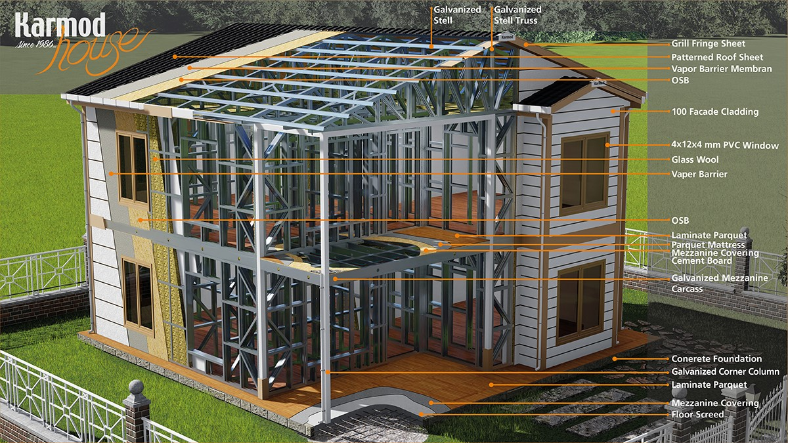
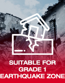
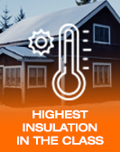
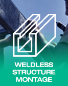
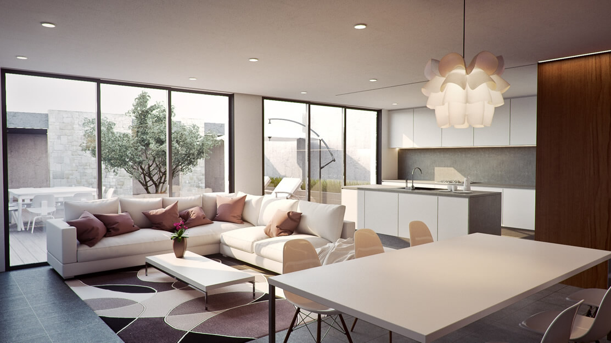

A Steel house that is engineered to suit your lifestyle
Karmod steel frame homes are produced by means of modern technology, in order to provide steel house solutions that are reliable, quickly constructed, and good value for money.
There are no limitations when you think about your steel house plan and design. Karmod's team of professional engineers will receive your requirements or hand-drafted plan and work on it to be presented as a light steel homes solution. Light gauge steel frame construction technology is becoming the most popular worldwide thanks to the many advantages it offers such as durability, security, faultless structure, environment-friendly, flexibility, and most importantly affordability. Get you dream residential steel homes in a very short time. Karmod's innovative designs reduce costs. Building a steel frame home is a wonderful investment! Building with our steel framed home systems you are getting superior strength, better energy efficiency, less maintenance, a non-combustible material, and the use of a renewable green product in your home's main frame support system. This alone makes it the preferred material to build for your family to deter maintenance cost and have that added protection in case of threatening weather or fire situations. Metal building homes will never be compromised by termites or mold, therefore; there's no need to use dangerous chemicals to prevent such, eliminating excessive maintenance costs. Prefab steel homes also offer high energy efficiency when designed by our engineering team which maximizes utility bill savings. Over 60% of our steel is made from discarded steel products, so you can rest easy knowing you are also making a green choice by building a prefab steel frame home produced by Steel Structures and our knowledgeable steel engineers.
Superior Features of Our Steel Houses
- 
- 
- 
Steel Building - A Smart Investment
One of the biggest advantages of our LSF structures is their ability to be manufactured offsite. This allows the next stage of construction to begin much sooner, saving onsite labor and assembly time and reducing overall costs. Light steel frame system also ensures the structure is manufactured to a superior quality due to our strictly factory-controlled processes allowing only products that meet our high standards to pass through our quality control stage.
Steel Building - A Smart Investment- Speed
- Flexibility
- Cost-efficient
- Durability
- Energy Efficient
- Earthquake-resistance
- Fire-resistance
- High thermal performance
- Sustainable and green construction
Light-Gauge Steel framing systems decrease the human involvement in that it negates any faults as much as possible. Construction time on site also minimizes the levels of mistakes that can happen with conventional buildings as all processes are handled under strictly controlled conditions during all manufacturing and production stages. These and other reasons make the light gauge steel system option, far superior to that of traditional building construction. Structural Steel Frames are no longer exclusively used only for skyscrapers and large commercial buildings, This system is also used to build modern, attractive houses and commercial buildings with many benefits over conventional methods of construction
Save Money With Karmod Steel Houses
Get in touch with a member of Karmod and benefit from the advantages of Quick Build, Long-Lasting, Energy-Efficient, Green Construction, Low Maintenance steel houses at the most affordable prices.